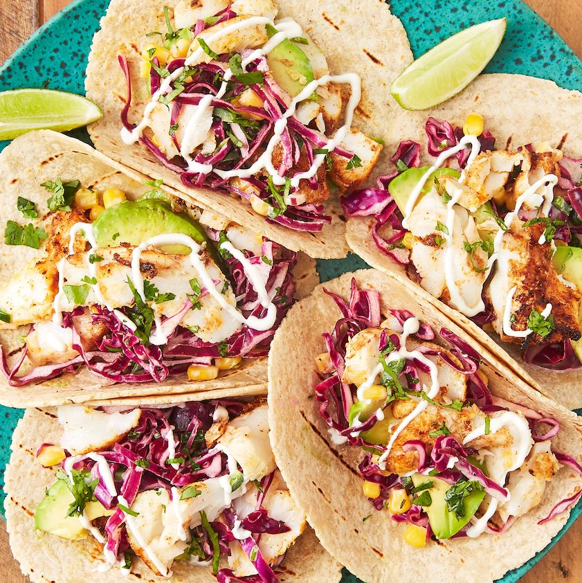

Fish Tacos

Description
A good fish taco brings to mind beach days, salty air, and sunny dispositions. If these tacos are your go-to on warm weather vacations, then it's more than worth it to re-create them at home for the perfect anytime summer dinner. Ready in a little more than 30 minutes, these versatile tacos also require very little cooking time, resulting in the most flavorful, flaky tacos. Invite your friends over, get out your toppings, and get ready your to switch up your taco night in the best way possible.
Ingredients
Corn slaw
- 1/4 c. mayonnaise
- Juice of 1 lime
- 2 tbsp chopped fresh cilantro
- 1 tbsp. honey
- 2 c. shredded purple cabbage
- 1 c. corn kernels
- 1 jalapeño, finely chopped
- Kosher salt
- Freshly ground black pepper
Tacos
- 3 tbsp. extra-virgin olive oil
- Juice of 1 lime
- 2 tsp. chili powder
- 1 tsp. paprika
- 1/2 tsp. cayenne pepper
- 1/2 tsp. ground cumin
- 1 1/2 lb. cod (or other flaky white fish)
- 2 tsp. vegetable oil
- Kosher salt
- Freshly ground black pepper
- 8 corn tortillas, toasted
- 1 avocado, finely chopped
Lime wedges and sour cream, for serving
Steps
Corn slaw
- In a large bowl, whisk mayonnaise, lime juice, cilantro, and honey. Stir in cabbage, corn, and jalapeño; season with salt and black pepper.
- Cover and refrigerate until ready to serve.
Tacos
- In a medium shallow bowl, whisk olive oil, lime juice, paprika, chili powder, cayenne, and cumin. Add cod and toss until coated. Let marinate 15 minutes.
- In a large nonstick skillet over medium-high heat, heat vegetable oil. Remove cod from marinade; season both sides of fish with salt and black pepper. Arrange fish in skillet flesh side down. Cook, turning once, until opaque and cooked through, 3 to 5 minutes per side. Let rest 5 minutes before flaking with a fork.
- Top tortillas with fish, corn slaw, and avocado. Squeeze lime juice over and drizzle with sour cream.